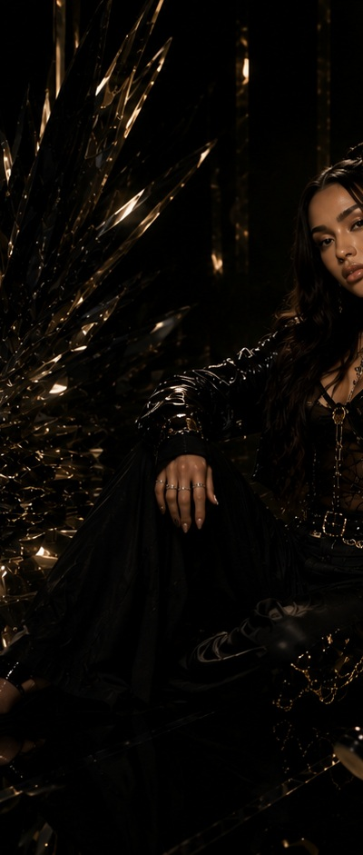
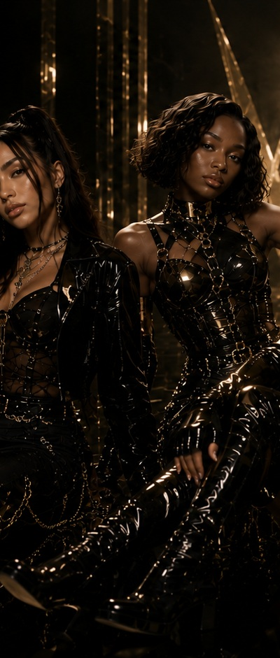
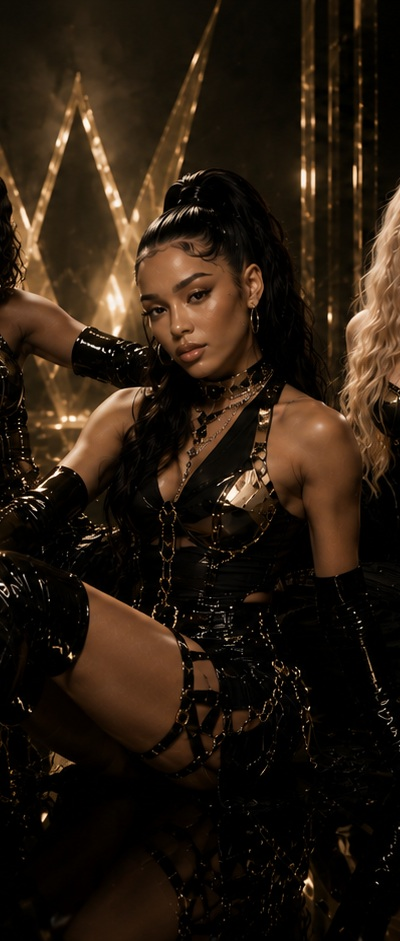
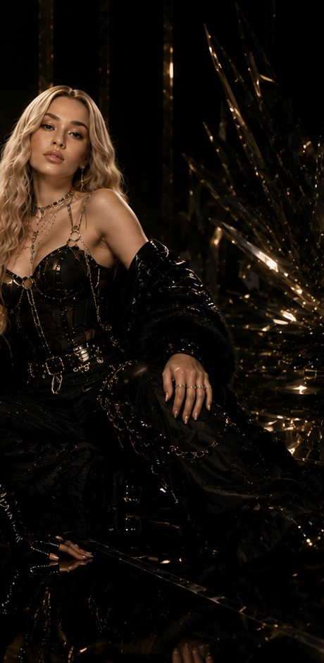

Aria Vale
The Writer
Lead vocals, lower register. Quiet, private, classically trained before she found R&B. Journals constantly, and when a song needs to hurt, it's her voice that carries it.
Artist · Gothic Luxury
Four voices. Four energies. One frequency.
We do not follow the light. We create our own.
VANTA takes its name from vantablack, one of the darkest materials known, absorbing nearly all the light that touches it. Four distinct energies pulled into one gravity. They do not blend into each other. They orbit each other.
The World
Aria Vale, Juno Knox, and Nyla Starr came up together first, studio friends writing and recording long before there was a name for it. Elara Bloom joined later, the missing piece once the other three had already found their chemistry. She had to earn her place inside a bond that already existed, and that history is still part of the group's dynamic today.
Born in the late nights and built in the studio with Moon Realm, VANTA turns emotion into sound and the space between darkness and desire into a stage. Every song is a confession. Every performance is a release.
The Members

The Writer
Lead vocals, lower register. Quiet, private, classically trained before she found R&B. Journals constantly, and when a song needs to hurt, it's her voice that carries it.

No Filter
Rhythm-driven vocals, started as a dancer before she sang. Sharp, funny, and fiercely loyal. Says the thing everyone else is thinking, and usually says it first.

The Strategist
Runs and ad-libs, the high register that makes the moment land. Grew up around the industry and thinks in terms of image and longevity. Guarded, deliberate, and superstitious about her rituals before a show.

The Newest
Airy high harmonies and top line melodies. The youngest of the four, and the one with the most to prove. Soft spoken until she says something razor sharp.
Music
VANTA's debut work is being built in the studio with Moon Realm. Nothing is rushed and nothing is announced before it is ready. Recordings and dates arrive here the moment they are real.